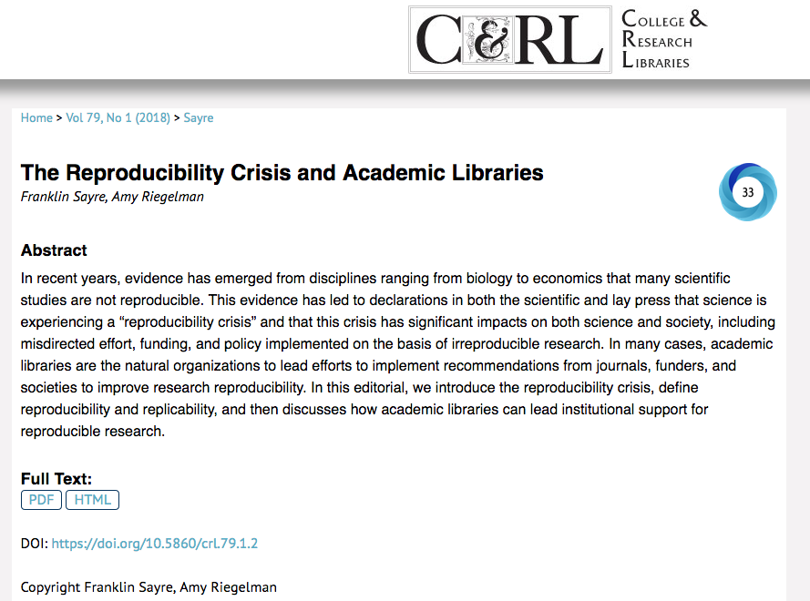
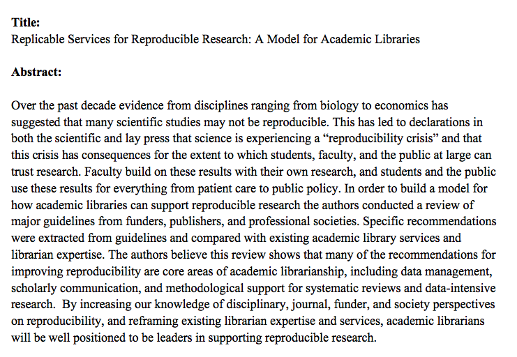

<h2>Reproducibility Guidelines & The Reporting Of Science</h2> <p>Franklin Sayre</p> <p>[fdsayre@umn.edu](fdsayre@umn.edu)</p> <aside class="notes"> So hello, My name is Franklin Sayre, I’m the pharmacy librarian at the University of Minnesota, before that I worked with public health and graduate medicine at UBC, in Vancouver, Canada. I started looking at issues around the reproducibility of study results around 3 years ago. My interest is really two fold. On one hand I did a history and philosophy of science program and I'm interested in issues to do with epistemology, methodology, and scientific norms. On the other hand I work with health science researchers and professional students -- students who will go on to be clinicians and use research in patient care. </aside>
How I learned to stop worrying and love the reproducibility crisis


TAKE-AWAYS
<h2>Take-aways</h2> <p class="fragment fade-in">1. Reproducibility is, to a large degree, the work of academic librarians.</em></p> <p class="fragment fade-up">2. Data curation and sharing, broadly defined, is a major part of reproducibility guidelines.</p> <p class="fragment fade-up">3. Reproducibility is not a component of data management. Data management is a component of reproducibility.</p> <aside class="notes"> Three takeaways 1. I think the following guidelines demonstrate that many, if not most (by raw number if not importance) recommendations relate to core areas -- citation, data sharing, publications -- of academic librarianship 2. Data, creation, curation, and sharing, broadly defined, is an essential part of reproducibility. 3. Reproducibility guidelines -- and the role academic librarians can play in improving reproducibilty -- is much wider than data management. I've heard a lot of people day that Repro is itself just a component of DM. I want to convince you that it's an opportunity. We need to engage liaisons and others in the work of repro and vice versa. There is a danger that by thinking of the libraries contribution to repro as just being DM and sharing, we miss opportunities. </aside>
### Reproducibility > "the ability of a researcher to duplicate the results of a prior study using the <em style="color:Tomato;">same materials and procedures</em> as were used by the original investigator." <small>Bollen, K., Cacioppo, J., Kaplan, R., Krosnick, J. A., & Olds, J. L. (2015). Social, Behavioral, and Economic Sciences Perspectives on Robust and Reliable Science. Report of the Subcommittee on Replicability in Science Advisory Committee to the National Science Foundation Directorate for Social, Behavioral, and Economic Sciences.</small> <aside class="notes"> First, quick definitions. These definitions come from NSF report. Definitions for reproducibility and replicability vary and often conflict between sources. </aside>
### Replicability > “the ability of a researcher to duplicate the results of a prior study if the same procedures are followed but <em style="color:Tomato;">new data are collected</em>.” <small>Bollen, K., Cacioppo, J., Kaplan, R., Krosnick, J. A., & Olds, J. L. (2015). Social, Behavioral, and Economic Sciences Perspectives on Robust and Reliable Science. Report of the Subcommittee on Replicability in Science Advisory Committee to the National Science Foundation Directorate for Social, Behavioral, and Economic Sciences.</small> <aside class="notes"> This is distinguished from replicability, which is the ability to duplicate (not necessarily exactly) the results while gathering new data. Replicability goes further than reproducibility, and in many ways relies on the same things as reproducibility. </aside>
### Levels of Reproducibility <small>Levels of Reproducibility from: Stodden, V., Bailey, D. H., Borwein, J., Leveque, R. J., Rider, W., & Stein, W. (2014). Setting the Default to Reproducible Reproducibility in Computational and Experimental Mathematics.</small> <aside class="notes"> </aside>
Why Academic Librarians and Reproducibility?
> “First, a finding needs to be repeatable to count as a scientific discovery. Second, <em style="color:Tomato;">research needs to be reported in such a manner that others can reproduce the procedures</em>.” <small>Zwaan, R., Etz, A., Lucas, R., & Donnellan, B. (2017). Making Replication Mainstream.</small> <aside class="notes"> </aside>
<h2 style="color:Tomato; vertical-align: top;">Content vs reporting (packaging) of science</h2> <aside class="notes"> </aside>
### Content * Hypothesis * Study Design * Analysis <aside class="notes"> </aside>
### Reporting (Packaging) * Was the research published? * Were methods adequately reported? * Was there analysis plan transparency? * Was there code, data, and materials transparency? * Is the published article accessible? * Is the published article discoverable? <aside class="notes"> </aside>
Guidelines
### TOP (Transparency and Openness Prom otion) Guidelines
### TOP Guidelines <p><em style="color:Tomato;"> Proper Citation of:</em> data, code, and materials.</p> <p class="fragment fade-up"><em style="color:Tomato;">Data Transparency, Analytic Methods (code) Transparency, Research Materials Transparency:</em> Sharing of underlying data, analytical code, and research materials.</p> <aside class="notes"> </aside>
### TOP Guidelines <p><em style="color:Tomato;">Design and analysis transparency:</em> This standard encourages authors to follow explicit guidelines for disclosing key aspects of research design and analysis.</p> <p class="fragment fade-up"><em style="color:Tomato;">Preregistration:</em> both of studies and analysis plans.</p> <p class="fragment fade-up"><em style="color:Tomato;">Replication:</em> This standard relates to the journal's willingness to publish direct replications of studies it previously published.</p> <aside class="notes"> </aside>
### American Statistical Association (ASA) Guidelines <aside class="notes"> Next, the American Statistical Association Guidelines. ASA has been doing really interesting work on Reproducibility Repro editors, include Julian Wolfson in Public Health Victoria Stodden is another repro editor These are meant for funders and represent ASAs interest, but we think are interesting in a number of ways for how they are similar to and different from the TOP guidelines and NIH recommendations </aside>
### American Statistical Association (ASA) Guidelines <p>Funding small-scale <em style="color:Tomato;">software development, data products, and replications</em> of previous studies.</p> <p class="fragment fade-up">Increasing support for the methodological training, with particular <em style="color:Tomato;">emphasis on the need for data management skills</em>.</p> <aside class="notes"> </aside>
### American Statistical Association (ASA) Guidelines <p>Adding <em style="color:Tomato;">code management plans to existing Data Management Plans (DMPs)</em> and asking grant reviewers to explicitly assess DMPs.</p> <p class="fragment fade-up">Creating mandatory undergraduate reproducibility and <em style="color:Tomato;">computational research classes</em>.</p> <aside class="notes"> </aside>
### American Statistical Association (ASA) Guidelines <p>Increasing the impact that robust and reliable research practices on grants. </p> <p class="fragment fade-up">Providing increased guidance, more statisticians as part of grant review committees, and the development of standard terminology around reproducibility.</p> <aside class="notes"> </aside>
### NIH Guidelines <aside class="notes"> </aside>
### NIH Guidelines 5 recommendations contained in the Principles and Guidelines for Reporting Preclinical Research <aside class="notes"> </aside>
### NIH Guidelines 1. Rigorous statistical analysis 2. Transparency in reporting methods 3. Data and materials sharing 4. Consideration of refutations 5. Building best practices around materials transparency and sharing <aside class="notes"> </aside>
### Other Guidelines - NIH Framework - Disciplinary & Society Guidelines - Journal Checklists - Methodology-based Guidelines <aside class="notes"> </aside>
## Revisiting Our Role in the reporting of science <aside class="notes"> </aside>
### Reporting * Was the research published? <em style="color:Tomato;">(Registered Reports, Pre-Registration, Pre-Prints, Traditional Publications)</em> * Were methods adequately reported? <em style="color:Tomato;">(Reporting Guidelines)</em> * Was there analysis plan transparency? <em style="color:Tomato;">(pre-registration)</em> <aside class="notes"> </aside>
### Reporting * Was there code, data, and materials transparency? <em style="color:Tomato;">(Disciplinary and institutional repositories, appropriate citation of papers, code, materials, Data Management)</em> * Is the published article accessible? <em style="color:Tomato;">(Open Access, Preprints, Self-Archiving)</em> * Is the published article discoverable? <em style="color:Tomato;">(Indexing, Properly applied metadata)</em> <aside class="notes"> </aside>
### Questions? <aside class="notes"> </aside>
### Image Credits - [Card Catalog](https://www.flickr.com/photos/andylangager/9368801248/) by Andy Langager - [Harry in a Box](https://www.flickr.com/photos/nwater/17330655219/) by Michael Frank Franz <aside class="notes"> </aside>